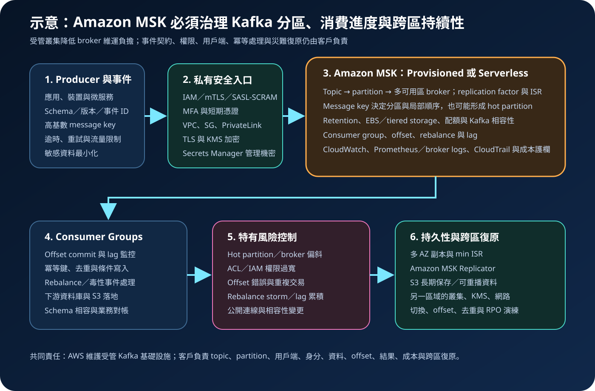

Amazon MSK：受管 Kafka、事件串流與安全治理
Amazon Managed Streaming for Apache Kafka（Amazon MSK）是執行 Apache Kafka 工作負載的受管服務。AWS 負責控制平面、broker 基礎設施與故障替換，但不會代替 topic 與 partition 設計、事件契約、用戶端相容性、consumer offset、冪等處理、資料治理或跨區災難復原。
作者：Dr. William｜查閱與發布：2026-10-03
服務定位
Amazon MSK 適合需要 Apache Kafka API、用戶端、生態系與事件日誌語意，又希望減少自行安裝、修補、監控及替換 broker 工作的團隊。Producer 將 record 寫入 topic；topic 分成多個 partition；partition 副本分布於 broker；consumer group 再平行讀取並管理 offset。既有 Kafka 應用通常可沿用標準協定連線，但仍須驗證版本、驗證方式、組態、外掛與網路相容性。
Amazon MSK 不是事件治理或業務一致性的自動化答案。服務不會替客戶決定 message key、partition 數、replication factor、retention、schema 相容規則、consumer 重試、exactly-once 邊界、長期保存與跨區切換。錯誤設計仍可能造成 hot partition、consumer lag、重複交易、磁碟壓力與資料缺口。
核心概念與服務選型
Kafka 資料與處理模型
- Topic 與 partition：topic 是事件分類；partition 是平行處理、局部順序與容量分布的基本邊界。
- Broker 與副本：broker 保存 partition；多個副本可分散於不同可用區，leader 處理讀寫，其他副本維持同步。
- Message key：通常影響 record 被送往哪個 partition。相同 key 可維持該 partition 內的相對順序，也可能因 key 分布不均形成熱點。
- Consumer group：同一 group 內，一個 partition 同時由一個 consumer 成員處理；partition 數會限制該 group 的有效平行度。
- Offset：記錄 consumer 讀取位置。Offset commit 時機、重試與再平衡會影響重複處理或遺漏風險。
- Retention：Kafka 依時間或大小保留 record；retention 不是備份，也不代表下游處理已成功。
Provisioned 與 Serverless
- MSK Provisioned：客戶選擇 Standard 或 Express broker、節點數量與部分 Kafka 組態，適合需要容量控制、較完整 Kafka 功能或可預測長期負載的情境。
- MSK Serverless：AWS 代管容量配置與擴縮，適合流量變動、希望降低叢集容量規劃負擔，且需求符合其功能、配額與驗證方式的工作負載。
- 儲存：Standard broker 使用客戶配置的 EBS，符合條件時可評估 tiered storage；Express broker 的儲存由 MSK 管理並依使用量計費。
- 身分驗證：依叢集類型與設定可使用 IAM access control、TLS mutual authentication 或 SASL/SCRAM；選型須同時考慮 Kafka 用戶端支援與營運能力。
- 網路：叢集部署於 VPC 網路範圍，需治理 subnet、security group、DNS、跨 VPC／跨帳戶連線與 egress；公開存取只應在明確必要且完成風險審查時啟用。
- 版本：Kafka 版本影響功能與相容性。升級前須在非正式環境驗證 producer、consumer、connector、認證與復原程序。
適合與不適合的使用情境
適合
- 既有系統已使用 Kafka API、用戶端或 connector，需要遷移至受管平台並維持生態系相容性。
- 多個 producer 與 consumer 需要以 topic、partition、consumer group 與 offset 建立可重播的事件處理架構。
- 微服務、CDC、日誌、IoT、交易事件或分析管線需要高吞吐、長時間運作與多下游訂閱。
- 團隊需要控制 Kafka 版本、partition、retention、驗證方式與網路，但希望 AWS 管理 broker 基礎設施。
- 團隊具備 Kafka 操作能力，能持續管理 schema、lag、rebalance、容量、磁碟、權限、成本與復原。
不適合或不能單獨完成
- 只需要簡單事件路由、工作佇列或無伺服器整合，且沒有 Kafka 相容性需求；可比較 EventBridge、SQS、SNS 或 Kinesis Data Streams。
- 希望服務自動保證跨多個外部系統的 exactly-once 業務交易。Kafka 交易不能取代下游資料庫的冪等、唯一性與對帳。
- 缺少 Kafka 操作能力，卻需要大量自訂 connector、schema 演進、跨區複寫與低延遲調校。
- 需要永久保存、任意查詢或法規歸檔；應另設 S3、資料湖、資料庫或搜尋平台。
- 把多可用區副本視為跨區災難復原，卻未建立第二區域、資料複寫、切換與 offset 對應程序。
示意故事案例：零售訂單事件中樞
以下為示意案例，不代表特定企業或正式部署。 一家零售平台已有多個 Kafka 用戶端，訂單、付款、庫存、配送與風險服務透過事件協作。團隊先盤點 topic 擁有者、schema、message key、partition 流量、峰值吞吐、平均 record 大小、consumer group、可接受 lag、保留時間、RPO／RTO 與月成本上限，再選擇三個可用區的 MSK Provisioned 叢集。訂單 ID 經過容量測試後作為分區鍵，避免以低基數門市代碼讓單一 partition 過熱。
應用程式使用工作負載角色與短期憑證，僅能讀寫核准的 topic 與 consumer group；管理人員透過聯合登入與 MFA 執行受控變更。用戶端從私有 subnet 經限制性 security group 連線，傳輸使用 TLS，資料使用指定 KMS key 加密；必要機密由 Secrets Manager 管理，一般參數放在 Parameter Store。Consumer 以不可變事件 ID 實作冪等寫入，失敗事件進入隔離 topic 並有重試上限。CloudWatch、broker logs 與相容監控工具追蹤 partition 流量、UnderReplicatedPartitions、OfflinePartitionsCount、磁碟、CPU、連線、錯誤率與 consumer lag；CloudTrail 保存管理 API 證據。重要 topic 透過 Amazon MSK Replicator 複寫至另一區域，原始事件另行落地 S3，團隊定期演練 DNS、應用程式、offset、重複事件與資料缺口處理。

建置與運作流程
- 定義事件契約：記錄 topic、擁有者、schema、版本相容策略、事件 ID、message key、敏感欄位、大小限制與刪除要求。
- 量測工作負載：盤點 producer／consumer 數、尖峰 records/s、MB/s、partition key 分布、保留量、lag、連線數與成長率。
- 選擇叢集類型：比較 Provisioned 與 Serverless 的功能、配額、驗證、網路、容量控制、Kafka 相容性及總成本。
- 設計 topic 與 partition：依吞吐、consumer 平行度、順序邊界、重播與未來擴充設定；避免只以目前平均流量估算。
- 設計可用性：使用多可用區 broker，設定合適 replication factor、min.insync.replicas 與 producer acknowledgement，避免可用性與持久性組態互相矛盾。
- 建立身分邊界：人員使用聯合登入、MFA 與短期憑證；管理、producer、consumer、replicator 與監控角色分離並採最小權限。
- 建立私有網路：選擇 subnet 與 security group，限制來源、目的地、跨 VPC、跨帳戶、PrivateLink、DNS 與 egress；預設不啟用公開存取。
- 設定驗證與授權：依用戶端選擇 IAM、mTLS 或 SASL/SCRAM；同時治理 Kafka ACL、叢集政策、IAM policy 與 KMS key policy。
- 保護資料：啟用傳輸加密與 KMS 靜態加密，敏感資料最小化；必要機密放入 Secrets Manager，一般設定放入 Parameter Store。
- 實作 producer：設定批次、壓縮、逾時、限制式重試、acknowledgement、事件 ID 與錯誤處理；避免無上限重試放大流量。
- 實作 consumer：設定 offset commit、冪等寫入、重試上限、隔離 topic、schema 驗證、rebalance 處理與業務對帳。
- 建立可觀測性：監控 broker、partition、儲存、網路、驗證失敗、錯誤率、consumer lag、rebalance 與跨區複寫延遲。
- 建立持久保存與復原：把需長期保存的事件落地 S3；以 MSK Replicator 或核准工具建立跨區副本，並演練切換及回復。
成本、可用性與維運考量
MSK Provisioned 成本通常受 Standard 或 Express broker instance 時數、broker 數、儲存模式、資料傳輸、跨 AZ／跨區流量與監控選項影響；Standard broker 另須估算 EBS、額外儲存吞吐與 tiered storage，Express broker 則使用受管且依使用量計價的儲存。MSK Serverless 依其叢集容量、資料處理與儲存計費項目計算。MSK Replicator、PrivateLink、NAT、KMS、CloudWatch logs、自訂指標、S3、資料傳輸與 connector 也可能產生成本。實際價格依區域與服務更新而異，部署前須使用官方價格頁與流量測試重新估算。
降低成本不能只減少 broker 或縮短 retention。應先修正過多 partition、小 record、低壓縮率、hot partition、無上限重試、consumer lag、閒置 connector、過量日誌與不必要跨區流量。Provisioned 容量過低會增加限流、磁碟與復原風險，過高則長期閒置；Serverless 降低容量管理工作，但仍須確認配額、功能限制、尖峰行為與成本曲線。
多可用區 broker 與 partition 副本可降低單一 broker 或可用區故障影響，但叢集仍是區域資源。Replication factor、min ISR、acknowledgement、用戶端重試與 leader election 組態會共同影響持久性和可用性。跨區復原需建立另一區域的叢集、KMS、網路、角色、topic、應用程式與資料複寫，並處理 DNS、offset、順序、重複、缺口與切回。
Amazon MSK 特有資安風險與控制
- Topic 或 consumer group 越權：IAM、叢集政策、Kafka ACL 與驗證設定須一致限制到必要叢集、topic 與 group；定期測試拒絕路徑。
- SASL/SCRAM 機密外洩：機密僅存於 Secrets Manager，限制讀取者、輪替與 KMS 權限；程式、映像、日誌與錯誤訊息不得留下明文。
- mTLS 憑證治理失敗：建立核發、到期、撤銷與更新程序，監控驗證失敗，避免共用用戶端憑證。
- 公開或跨網路連線過寬：預設使用私有連線；限制 security group、VPC connection、PrivateLink、叢集政策、DNS 與 egress。
- Hot partition 與 broker 偏斜：監控 partition bytes、message key 分布與 broker 資源，使用高基數鍵、重新分區或增加 partition，並限制惡意 producer 速率。
- Partition 數失控：過多 partition 會增加 broker、controller、記憶體、檔案與 rebalance 負擔；建立建立／擴充分區的審批與容量門檻。
- Offset 錯誤造成遺漏或重複：明確定義 commit 時機，事件使用穩定 ID，下游採冪等鍵、條件寫入、唯一性限制與對帳。
- Rebalance storm：調整 session、heartbeat、poll 與處理時間，使用穩定成員策略或核准機制，監控成員反覆加入離開與 lag。
- 不安全反序列化與 schema 演進：限制 record 大小與型別，採相容性規則、輸入驗證與隔離 topic，禁止直接執行事件內容。
- 磁碟耗盡與 retention 誤設：監控儲存與成長率，設定容量告警、自動擴充或 tiered storage，並保留獨立持久副本。
- KMS key 停用或政策錯誤：分離 key administrator 與使用者，限制 key policy，監控停用、刪除排程與解密拒絕並演練復原。
- 監控盲區：同時收集 CloudWatch、broker logs、consumer lag、驗證失敗與 CloudTrail；日誌採遮罩、加密、存取控制和保留政策。
- 版本升級與用戶端不相容：先在非正式環境執行相容測試、回復計畫與負載測試，再分階段升級並觀察錯誤與 lag。
- 跨區複寫擴大資料暴露：只複寫核准 topic，限制 replicator 角色、KMS、目的叢集與網路，監控複寫延遲、失敗及資料分類要求。
共同責任邊界
AWS 負責 Amazon MSK 受管服務及其底層雲端基礎設施安全、控制平面、broker 佈建與硬體故障替換。客戶仍負責資料內容、topic、partition、Kafka 組態、用戶端、驗證與授權、IAM、ACL、KMS、網路、schema、offset、冪等、監控、成本、長期保存與跨區復原。
客戶須落實 IAM 最小權限、管理者 MFA 與工作負載短期憑證、網路隔離、避免不必要公開存取、KMS 加密、Secrets Manager／Parameter Store、CloudTrail／CloudWatch、備份性持久落地與跨區復原。AWS 不會替客戶判斷 message key 是否形成熱點、consumer 是否重複扣款、ACL 是否過寬、schema 是否相容、replication factor 是否足夠，或另一區域能否在 RTO 內接手。
上線前可執行檢查清單
- □ 已記錄 topic 擁有者、schema、事件 ID、message key、資料分類、retention、RPO／RTO、延遲目標與月成本上限。
- □ 已量測平均與尖峰 records/s、MB/s、record 大小、key 分布、partition、consumer group、lag、連線數與成長。
- □ Provisioned 或 Serverless 的功能、配額、Kafka 版本、驗證、網路、容量與價格已依官方資料確認。
- □ Topic、partition、replication factor、min ISR、acknowledgement 與 retention 有容量及持久性依據。
- □ 人員使用聯合登入、MFA 與短期憑證；管理、producer、consumer、replicator、監控與 KMS 權限已分離。
- □ IAM、叢集政策、Kafka ACL、Secrets Manager 與 KMS key policy 已限制到必要資源並測試拒絕路徑。
- □ 叢集採私有網路；subnet、security group、VPC connection、PrivateLink、DNS 與 egress 沒有不必要開放。
- □ 傳輸使用 TLS，靜態資料使用核准 KMS key；key 停用、刪除、輪替與復原程序已驗證。
- □ 必要機密只存於 Secrets Manager，一般參數存於 Parameter Store；程式、事件與日誌均無明文機密。
- □ Producer 已設定批次、壓縮、acknowledgement、逾時、限制式重試、事件 ID、輸入驗證與流量控制。
- □ Consumer 已設定 offset commit、冪等寫入、去重、schema 驗證、隔離 topic、重試上限與業務對帳。
- □ CloudWatch、broker logs 與 consumer lag 監控已涵蓋副本不足、離線 partition、磁碟、CPU、網路、驗證與錯誤。
- □ CloudTrail 已建立持續 trail，管理變更、叢集政策、KMS、網路與公開存取變更均有告警。
- □ 已測試 hot partition、broker／AZ 故障、磁碟壓力、rebalance、consumer 中斷、KMS 拒絕、網路中斷與版本升級。
- □ 重要事件已落地至受版本、加密、生命週期與存取控制保護的持久儲存。
- □ 另一區域已建立叢集、KMS、角色、網路與應用，並驗證複寫、切換、offset、去重、缺口及切回。
AWS 官方一手來源
- What is Amazon MSK?（查閱：2026-10-03）
- Getting started using Amazon MSK（查閱：2026-10-03）
- What is MSK Serverless?（查閱：2026-10-03）
- Amazon MSK broker types（查閱：2026-10-03）
- Amazon MSK Express brokers（查閱：2026-10-03）
- Storage management for Standard brokers（查閱：2026-10-03）
- Tiered storage for Amazon MSK（查閱：2026-10-03）
- Security in Amazon Managed Streaming for Apache Kafka（查閱：2026-10-03）
- Client authentication for Amazon MSK（查閱：2026-10-03）
- Apache Kafka ACLs（查閱：2026-10-03）
- Amazon MSK encryption（查閱：2026-10-03）
- Accessing an Amazon MSK cluster（查閱：2026-10-03）
- Monitoring an Amazon MSK cluster（查閱：2026-10-03）
- Log Amazon MSK API calls using AWS CloudTrail（查閱：2026-10-03）
- What is Amazon MSK Replicator?（查閱：2026-10-03）
- Best practices for Amazon MSK（查閱：2026-10-03）
- Amazon MSK pricing（查閱：2026-10-03）
- AWS Well-Architected Security Pillar｜Shared responsibility（查閱：2026-10-03）
內容說明
本文依查閱日可用的 AWS 官方文件整理，作為基礎學習與架構討論材料；實際部署仍須依最新 Kafka 版本、叢集類型、區域支援、broker 類型、配額、驗證方式、網路能力、價格、資料分類、組織政策與復原演練結果調整。